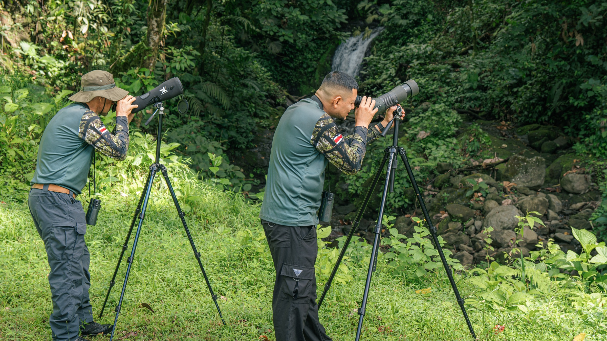

jungletreehouse v2 (2).jpg
Wide aerial view of elevated timber accommodation among trees with turquoise roofs.
PA-CH-10
Landscape inset preserves the building and surrounding canopy; category comes from Jungle Tree House folder.
Original photograph / 4:5 feed / 9:16 Story. Internal review · Not published.

Two guides with spotting scopes beside a forest waterfall.
AR11
Landscape inset retains both guides and their equipment.
Wide aerial view of elevated timber accommodation among trees with turquoise roofs.
PA-CH-10
Landscape inset preserves the building and surrounding canopy; category comes from Jungle Tree House folder.

Closer aerial view of a raised timber building, walkway and round outdoor water feature among trees.
PA-CH-04
Landscape inset keeps building, access walkway and water feature together; no temperature or private-use claim.

Two stone washbasins, golden taps, timber mirror frame and folded white towels.
PA-AR-10
Inset preserves both basins; useful as a detail, not a bedroom or volcano-view image.